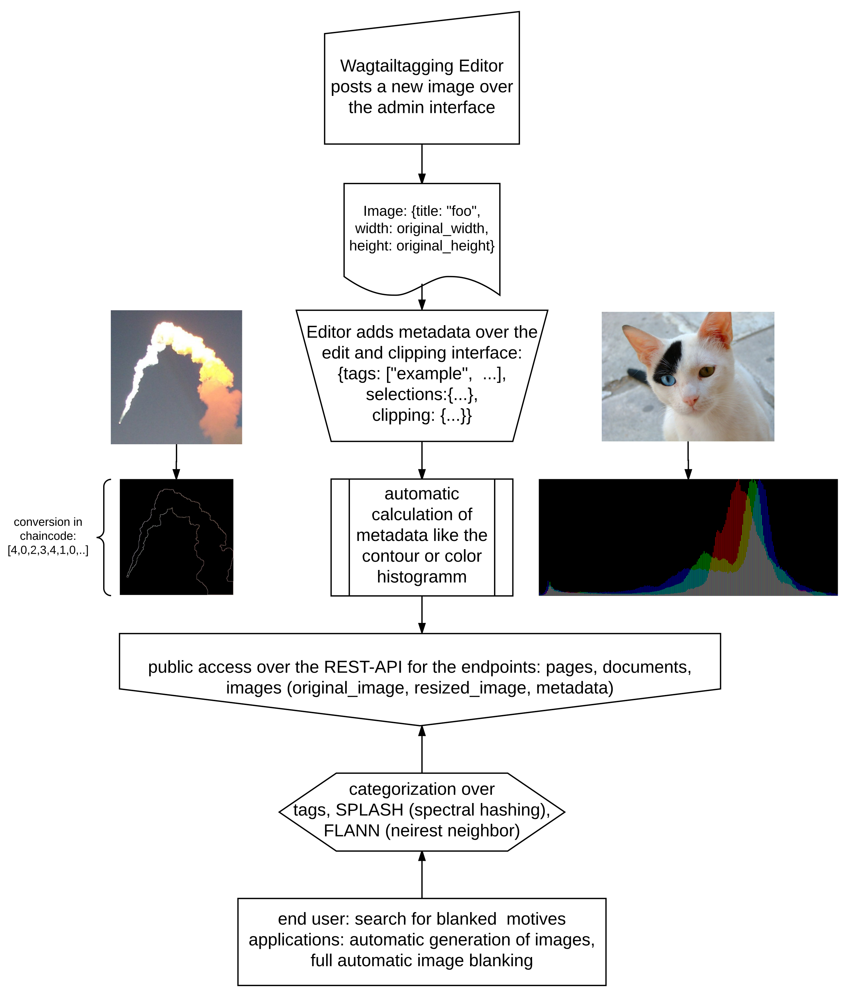

Weiterführung¶
Mit Wagtailtagging wurde eine solide Extension für das Torchbox CMS Wagtail entwickelt. Die hinzugefügten Funktionen wären gut geeignet um eigene Bildarchive für künstliche Intelligenzen, insbesondere für neuronale Netze, zu erstellen. Angelehnt an die automatisierte Portraitsegmentierung ist die Idee für eine Software zur generellen Autosegmetierung entstanden. Inspiriert von Neural Doodle (Link zu einer schnelleren Version) ist das Exposé zur generative Bilderstellug entsprungen. Weitere Infos zur Benutzung und zur Fortführung der Anwendung gibt es auf der Live-Projektseite (http://wagtailtagging.nmy.de/nmy-neuro-archive/#NMY_Neuro_Archive). Der Quellcode mit dieser Dokumentation liegt auf https://github.com/Bachstelze/wagtailtagging. Bei weiteren technischen Fragen sei an dieser Stelle auf die sehr ausführliche Wagtail , Django und Rest Dokumentation verwiesen.
Ein grobes Schema zur angedachten Softwarestruktur:
Fazit¶
Die erstellte Software hätte mit den angeführten Ideen durchaus das Potenzial gehabt weitergeführt zu werden. Da sie aber nicht zu dem Unternehmensprofil passen, das klar in die Richtung von Augmented und Virtual Reality geht, wurden sie leider verworfen. Ob eine Verwendung von Neuronalen Netzen abgelöst von diesem Projekt möglich ist muss noch weiter erörtert werden. Nichtsdestotrotz kann das Praktikum als erfolgreich angesehen werden, da ich bei der Arbeit sehr viel Spaß hatte und einiges hinzugelernt hatte. Auch denke ich, dass von meiner Seite interessantes Wissen weitergegeben wurde.